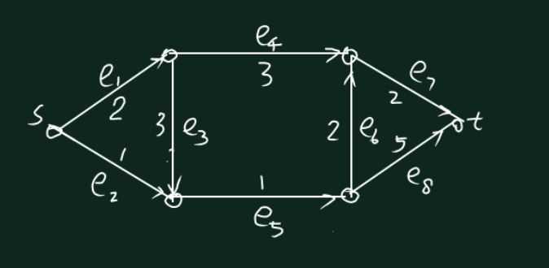

期末笔记合订本
应用运筹学基础 第一讲
应用运筹学基础 第二讲
一、最优化模型——基本结构
1.【定义1】凸集
若\(\forall x, y \in C, \forall \lambda \in (0, 1)\)，都有\(\lambda x + (1 - \lambda)y \in C\)，则称集合\(C\)是凸集。
【理解】凸集：任取集合中两点，这两点连成的线段上所有点都在集合中。
2.【定义2】凸函数
若函数\(f(x)\)满足以下两个条件：
（1）函数定义在凸集\(C\)上。
（2）\(\forall x, y \in C,\forall 0 \lt \lambda \lt 1, f(\lambda x + (1 - \lambda y))\le \lambda f(x) + (1 - \lambda)f(y)\)。
则称函数\(f(x)\)为凸函数。
3.【定义3】凸优化
称定义在凸集\(C\)上，针对凸函数\(f\)进行的极小优化问题为凸优化问题。
4.【定理1】凸优化问题中，局部最优解就是整体最优解。
【证明】
（1）设\(\bar{x}\)为局部最优解，\(x^* \ne \bar{x}\)为全局最小的解，即\(f(\bar{x}) \gt f(x^*)\)，用反证法。
（2）连接\(\bar{x}. x^*\)，由凸函数性质，\(\forall x' \in \bar{x} x^*\)，都\(\exists \lambda \in (0, 1)\), 使得\(f(x) = \lambda f(\bar{x}) + (1 - \lambda)f(x^*) \lt \lambda f(\bar{x}) + (1 - \lambda)f(\bar{x}) = f(\bar{x})\)，因此\(\bar{x}\)不是局部最优解，矛盾。
5.【拓展定义1】上方图(epigraph)
称\(\{(z, x): f(x) \le Z, \forall x \in C\}\)为\(f(x)\)的上方图。
6.【拓展性质1】\(f(x)\)为凸函数，当且仅当上方图是凸的。
二、最优化模型——举例
1.生产计划问题
（1）问题描述
| 产品A | 产品B | 产品C | 库存 | |
| 材料一 | 5 | 15 | 0 | 300 |
| 材料二 | 10 | 0 | 20 | 200 |
| 利润 | 100 | 200 | 300 |
（2）优化目标
设产品\(A, B, C\)的产量分别为\(x_1, x_2, x_3\)，则优化目标为：
\(max \space 100 x_1 + 200 x_2 + 300 x_3\)
等价于：
\(min \space -(100 x_1 + 200 x_2 + 300 x_3)\)
（3）约束条件：
\(5x_1 + 15x_2 \le 300\)
\(10x_1 + 20 x_3 \le 200\)
\(x_1, x_2, x_3 \ge 0\)
（4）线性规划的约束区域一般为凸区域，即若干超平面围成的凸多面体。
（5）一般形式
\(max \space \vec{c}^T \vec{x}
\newline s.t. \space A\vec{x} \le \vec{b} \newline \space \space \space\space\space\space\space\vec{x} \ge 0\)
2.网络流——最大流问题
（1）约束条件
·进出平衡
·流量限制
（2）决策变量：各边的实际流量\(x_{s,1}, x_{s,2}, \cdots, x_{n-1,t}, x_{n,t}\)。
（3）优化目标：\(max \space x_{s, 1}, \cdots, x_{s, k}\)，即从源点\(s\)发出的流量之和。
（4）约束：
①平衡约束：\(x_{s, 1} - x_{1, 2} - x_{1, 3} = 0\)。
②容量约束：\(x_{s, 1} \le c_{s, 1}\)。
③流量非负性：\(\vec{x} \ge 0\).
（5）引入从汇点\(t\)到源点\(s\)的回流，则源点、汇点也可以直接使用上述平衡约束。
3.运输问题
（1）问题描述
供应商存量\(b_1, \cdots, b_m\)，仓库需求\(D_1, \cdots, D_n\)，从供应商\(i\)到仓库\(j\)，单位货物的运费为\(c_{ij}\)。
（2）优化目标
设从供应商\(i\)到仓库\(j\)的实际运量为\(x_{ij}\)，则优化目标为：
\(min \space \Sigma_{i = 1}^m \Sigma_{j = 1}^n c_{ij}x_{ij}\)。
（3）约束条件：
①供需平衡：\(\Sigma_{i = 1}^m b_i = \Sigma_{j = 1}^n D_j\)
②各仓库需求约束：\(\Sigma _{j = 1}^n x_{ij} = D_i\)
③各供应商供应约束：\(\Sigma _{i = 1}^m x_{ij} = b_j\)
（3）问题变形
·供求不平衡问题
·不连续问题
三、最优化问题——基本性质
1.【定义4】松弛
为不等式添加非负变量，使之变成等式的处理，称为松弛。
2.【定义5】极点的几何定义
给定凸集\(C\)以及\(C\)中一点\(x\)，若\(\forall y, z \in C, \forall \lambda \in (0, 1)\)，只有\(x = y = z\)时才成立\(\lambda y + (1 - \lambda)z = x\)，则称\(C\)是凸集上的一个极点。
【理解】极点\(x\)的几何定义，即\(x\)不能由凸集\(C\)中其余任意两点进行线性表示。
3.【定理2】某线性规划问题若有有限最优解，则必定存在最优解在它的某个极点达到。
4.【定义6】线性规划的基本可行解
设\(A\vec{x} = \vec{b}, r(A) = m \le n\)，\(A_B = (P_1, \cdots, P_1)\)为矩阵\(A\)的一个基，若\(\vec{x} = [\vec{x_B}, \vec{x_N}]^T\)满足：
（1）\(\vec{x_B} = A_B^{-1}\vec{b}\)。
（2）\(\vec{x_N}\)为零向量。
（3）\(\vec{x}\)满足所有线性规划约束条件，是可行解。
则称\(x\)是线性规划问题的一个基本可行解。
【理解】分块矩阵乘法：\(A\vec{x} = [A_B, A_N][\vec{x_B}, \vec{x_N}]^T = A_B\vec{x_B} + A_N\vec{x_N} = \vec{b}\)，由于\(A_N\vec{x_N} = \vec{0}\)，故\(\vec{x_B} = A_B^{-1}\vec{b}\)。
5.【定理3】
线性规划问题中，\(x\)是极点，当且仅当\(x\)是基本可行解。
【理解】线性规划问题，从针对整个可行域进行搜索，转化为只需针对有限个极点（基本可行解）进行搜索，转化为组合优化问题。
应用运筹学基础 第三讲
一、线性规划
1.线性规划解的情况
对于以下标准线性规划9松弛形式）：
\(max \space c^Tx
\newline s.t. \space A\vec{x} = \vec{b}
\newline \space\space\space\space\space\space\space \vec{x} \ge 0\)
解的可能情况如下：
（1）无可行解。
（2）有可行解，且有有限最优解。
（3）有可行解，但无有限最优解。
2.注意：为了方便应用单纯形法，应该将所有的不等式约束转换成等式约束，即转换成松弛形式。
3.初始可行解的获得
·对于不等式约束\(A \vec{x} \le \vec{b}\)，首先添加松弛向量\(\vec{s}\)，将其变为等式约束：\(A\vec{x} + \vec{s} = \vec{b}\).
·此时，令松弛向量\(\vec{s} = \vec{b}\)，同时原始向量\(\vec{x} = \vec{0}\)，即得到一个初始可行解。
4.基本可行解、极点定义
（1）【定义】极点
给定凸集\(C\)以及\(C\)中一点\(x\)，若\(\forall y, z \in C, \forall \lambda \in (0, 1)\)，只有\(x = y = z\)时才成立\(\lambda y + (1 - \lambda)z = x\)，则称\(C\)是凸集上的一个极点。
（2）【定义】基本可行解
设\(A\vec{x} = \vec{b}, r(A) = m \le n\)，\(A_B = (P_1, \cdots, P_1)\)为矩阵\(A\)的一个基，若\(\vec{x} = [\vec{x_B}, \vec{x_N}]^T\)满足：
（1）\(\vec{x_B} = A_B^{-1}\vec{b}\)。
（2）\(\vec{x_N}\)为零向量。
（3）\(\vec{x}\)满足所有线性规划约束条件，是可行解。
则称\(x\)是线性规划问题的一个基本可行解。
5.线性规划的凹凸性质
（1）线性规划问题的目标函数，既是凸函数，又是凹函数。
（2）对于凸优化而言，局部最优即为全局最优。凸优化的目标是，在凸集上极小化凸函数。
（3）由于线性规划问题的目标函数同时是凹函数、凸函数，故对于该问题而言，极小化凸函数等价于极大化凹函数，对应了线性规划最小化目标函数和最大化目标函数相反数的等价性质。
【注】
（1）基本可行解的表达——拆分成基变量和非基变量
\(x = \begin{bmatrix}
x_B\\
x_N\\
\end{bmatrix} = \begin{bmatrix}
A_B^{-1}b\\
0\\
\end{bmatrix}\).
（2）拆分\(A\vec{x} = \vec{b}\)：
$
\begin{bmatrix}
A_B \ A_N \
\end{bmatrix}
\begin{bmatrix}
x_B \
x_N \
\end{bmatrix} = b
$
上式等价于：\(\vec{x_B} = A_B^{-1}\vec{b}\).
（3）基本可行解的个数至多为\(C_n^m\)，其中\(m\)为矩阵的秩，\(n\)为变量个数。
（4）线性规划问题若有有限最优解，则必定存在最优解从有限个基本可行解中产生，因此线性规划可以转化为组合优化问题。
6.【定理1】线性规划的极点等价于基本可行解。
【证明】
（1）\(\rightarrow\)方向，设\(x\)是极点，下证\(x\)是基本可行解。
①证明逆否命题。假设\(x\)不是基本可行解，我们要推出\(x\)不是极点，即构造可行解\(x', x''\)，使得\(x\)能被\(x', x''\)线性表示。
②将\(x\)写作\(x = \begin{bmatrix} x_1, \ x_2, \ \cdots, \ x_k, \ 0, \ \cdots, \ 0 \end{bmatrix}^T\)，表示前\(k\)个分量为正分量，
则前\(k\)个正分量对应的列向量必定线性相关，
即：\(\exists \lambda_i, i = 1, 2, \cdots\)不全为\(0\)，使\(\lambda_1\vec{a_1} + \lambda_2\vec{a_2} + \cdots + \lambda_k\vec{a_k} = 0\)。
③给\(x\)添加扰动\(\epsilon\).
令\(x' = x + \epsilon \begin{bmatrix} \lambda_1, \cdots, \lambda_k, 0, \cdots, 0 \end{bmatrix}^T\)
\(x'' = x - \epsilon \begin{bmatrix} \lambda_1, \cdots, \lambda_k, 0, \cdots, 0 \end{bmatrix}^T\)
故\(x = \frac{1}{2}(x' + x'')\)
并且\(Ax' = Ax + A \epsilon \begin{bmatrix} \lambda_1, \cdots, \lambda_k, 0, \cdots, 0 \end{bmatrix}^T = Ax = b\)，
同样地，\(Ax''=b\)。
④故\(x\)不是极点。
（2）\(\leftarrow\)方向，设\(x\)是基本可行解，下证\(x\)是极点。
①证明逆否命题。假设\(x\)不是极点，我们要推出\(x\)不是基本可行解，即\(x\)对应的列向量线性相关，无法构成基。
②设\(x\)不是极点，则存在不同的可行解\(x', x''\)，使得\(x = \lambda x' +(1 - \lambda)x'', 0 \lt \lambda \lt 1\).
③将\(x\)写成\(x = \begin{bmatrix} x_1, \ x_2, \ \cdots, \ x_k, \ 0, \ \cdots, \ 0 \end{bmatrix}^T\),
则\(x_1\)只能写成\(x = \begin{bmatrix} x_1', \ x_2', \ \cdots, \ x_k', \ 0, \ \cdots, \ 0 \end{bmatrix}^T\)，
\(x_2\)只能写成\(x = \begin{bmatrix} x_1', \ x_2', \ \cdots, \ x_k', \ 0, \ \cdots, \ 0 \end{bmatrix}^T\)
④注意到\(A(x' - x'') = \vec{0}, x - x'' \ne \vec{0}\)，作转置、拆分可得：
\((x_1' - x_1'')\vec{a_1} + \cdots + (x_k' - x_k'')\vec{a_k} = 0\)
这说明列向量\(a_1, \cdots, a_k\)线性相关，
从而矩阵\([a_1, \cdots, a_k]^T\)不是基，\(x\)不是基本可行解。
（3）证毕。
二、单纯形法基本原理
1.【例1】单纯形法的运算步骤
\(max \space 20 x_1 + 30 x_2 \newline
s.t.\space 6x_1 + 3x_2 + x_3 = 40 \newline
\space\space\space\space\space\space\space 2x_1 + 5x_2 + x_4 = 50 \newline
\space\space\space\space\space\space\space x_1, x_2, x_3, x_4 \ge 0\)
（1）初始可行解的获得：
令\(\vec{x} = [0, 0, 40, 50]^T\)即得初始可行解。
（2）使用非基变量，表示基变量、目标函数，化为典则形式：
\(x_3 = 40 - 6x_1 - 3x_2 \newline
x_4 = 50 - 2x_1 - 5x_2 \newline
z = 20x_1 + 30 x_2\)
（3）注意到目标函数的两个检验数均为正，令增速更大的\(x_2\)入基，此时\(x_2 = 10\)，\(x_4 = 0\)，\(x = [0, 10, 10, 0]^T\)，目标函数值为\(300\)。
（4）此时新的典则形式如下：
\(x_2 = 10 - \frac{2}{5}x_1 - \frac{1}{5}x_4
\newline x_3 = 10 - \frac{24}{5}x_1 + \frac{3}{5}x_4
\newline z = 8x_1 - 6 x_4 + 300\)
（5）注意到检验数\(8\)为正，令\(x_1\)入基，\(x_3\)出基，此时的解变成\(x = [\frac{25}{12}, \frac{55}{6}, 0, 0]^T\)，目标函数值为\(\frac{950}{3}\)。
（6）新的典则形式为：
\(x_1 = \frac{25}{12} + \frac{1}{8}x_4 - \frac{5}{24}x_3\newline
x_2 = \frac{55}{6} + \frac{1}{12}x_3 - \frac{1}{4}x_4
\newline z = \frac{950}{3} - \frac{5}{3}x_3 - 5x_4\)
（7）此时检验数均为负，目标函数无法再进行提升，因此本题的最优目标函数值为\(\frac{950}{3}\)，对应的一个最优解为\(x = [\frac{25}{12}, \frac{55}{6}, 0, 0]^T\)。
2.方法总结
（1）对于最大化问题，用非基变量表示基变量、目标函数，化成典则形式。
（2）选取检验数为正，且检验数数值最大的非基变量入基。
（3）迭代至各检验数均不是整数，即得最优解。
3.一般形式
（1）分块矩阵
\(x = [x_B, x_N]^T
\newline A = [A_B, A_N]\)
（2）方程
\(A_Bx_B + A_Nx_N = b
\newline z = c^Tx = c_B^Tx_B + c_N^Tx_N\)
（3）典则形式
\(x_B = A_B^{-1}b - A_B^{-1}A_Nx_N\)
\(z = c_B^TA_B^{-1}b + (C_N^T - c_B^TA_B^{-1}b)x_N\)
（4）若检验数\(C_N^T - c_B^TA_B^{-1}b\)存在正分量，则选取正检验数数值最大的非基变量入基进行迭代；若检验数各分量均非正数，即达到最优解\(x_B = c_B^TA_B^{-1}b\)。
【理解】
（1）\(A_Bx_B + A_N x_N = b\)
（2）两边同时左乘\(A_B^{-1}\)，目的是将\(x_B\)的系数矩阵化为单位矩阵，即\(x_B + A_B^{-1}A_Nx_N = A_B^{-1}b\)。
（3）移项，得到用非基变量线性表示基变量的表达式：\(x_B = A_B^{-1}b - A_B^{-1}A_Nx_N\)
（4）\(z = c^Tx = c_B^Tx_B + c_N^Tx_N\)
（5）代入\(x_B = A_B^{-1}b - A_B^{-1}A_Nx_N\)，得到：
\(z = c_B^T(A_B^{-1}b - A_B^{-1}A_Nx_N) + c_N^Tx_N\)
（6）提取\(x_N\)的系数，得到用非基变量线性表示目标函数的表达式：
\(z = c_B^TA_B^{-1}b + (C_N^T - c_B^TA_B^{-1}b)x_N\)
4.入基的矩阵形式
设\(x_B = A_B^{-1}b - \bar{A}x_N\)，其中\(\bar{A} = A_B^{-1}A_N\)，检验数向量\(\sigma = C_N^T - c_B^TA_B^{-1}b\)。
（1）若\(\exists \sigma_j \gt 0\)，且\(\forall i, a_{ij} \le 0\)，则该问题没有有限最优解。
（2）若\(\sigma_j \gt 0\)，令\(x_j\)入基，则\(i = min_{a_{ij} \gt 0}\frac{b_i}{a_{ij}}\)相应的\(x_i\)被提出。
5.单纯型表
（1）原始形式
\(\left[\begin{array}{c|cc|c}
& c_B^T & c_N^T & \\
x_B & A_B & A_N & b\\
\end{array}\right]\)
（2）典则形式
\([\begin{array}{c|cc|c}
& 0 & c_B^T - c_N^TA_B^{-1}A_N & -c_B^TA_B^{-1}b\\
x_B & I & A_B^{-1}A_N & A_B^{-1}b\\
\end{array}]\)
①上表中，\(c_B^T - c_N^TA_B^{-1}A_N\)为检验数。
②上表中，\(-c_B^TA_B^{-1}b\)为当前目标函数值的相反数。
应用运筹学基础 第四讲
一、单纯形法——回顾
1.初始形式
\(\left[\begin{array}{c|cc|c}
& c_B^T & c_N^T & \\
x_B & A_B & A_N & b\\
\end{array}\right]\)
2.经过行变换，利用非基变量表示基变量、目标函数，化为典则形式：
\(\left[\begin{array}{c|cc|c}
& 0 & c_B^T - c_N^TA_B^{-1}A_N & -c_B^TA_B^{-1}b\\
x_B & I & A_B^{-1}A_N & A_B^{-1}b\\
\end{array}\right]\)
3.【例1】运用单纯形法解决线性规划问题
\(max \space z = x_1 + 2 x_2\)
\(s.t. \space x_1 + x_2 + x_3 = 3\)
\(\space \space \space \space \space \space \space x_2 + x_4 = 1\)
\(\space \space \space \space \space \space \space x_1, x_2, x_3, x_4 \ge 0\)
（1）初始单纯性表
\(\left[\begin{array}{c|cccc|c}
& 1 & 2 & 0 & 0 & \\
x_3 & 1 & 1 & 1 & 0 & 3 \\
x_4 & 0 & 1 & 0 & 1 & 1 \\
\end{array}\right]\)
（2）令\(x_2\)入基，\(x_4\)出基，对初始单纯形表进行行变换，化成新的典则形式：
\(\left[\begin{array}{c|cccc|c}
& 1 & 0 & 0 & -2 & -2 \\
x_3 & 1 & 0 & 1 & -1 & 2 \\
x_2 & 0 & 1 & 0 & 1 & 1 \\
\end{array}\right]\)
（3）令\(x_1\)入基，\(x_3\)出基，化成新的典则形式：
\(\left[\begin{array}{c|cccc|c}
& 0 & 0 & -1 & -1 & -4 \\
x_1 & 1 & 0 & 1 & -1 & 2 \\
x_2 & 0 & 1 & 0 & 1 & 1 \\
\end{array}\right]\)
（4）此时各检验数均小于等于\(0\)，故该问题的最优目标函数值为\(4\)，一个最优解为\(x = [2, 1, 0, 0]^T\)。
4.入基变量的选择
若总是选择最小下标，或总是选择最大下标的变量，则可避免循环。
5.线性规划可行性的一种判别方法
（1）设原问题的约束条件为\(Ax \le b\)，
引入松弛向量\(\bar{x}\)，使得\(Ax + \bar{x} = b\)
（2）令\(\bar{x} = b, x = 0\)，即得一组初始可行解。
（3）考虑线性规划问题\((Q)\)：
\(min \space \Sigma_{n = 1}^m \bar{x_i}\)
\(s.t. \space Ax + \bar{x} = b\)
\(\space \space \space \space \space \space \space x \ge 0\)
\(\space \space \space \space \space \space \space \bar{x} \ge 0\)
（4）若\((Q)\)的最优目标函数值为\(0\)，则原问题有可行解；若\((Q)\)的最优目标函数值大于\(0\)，则原问题没有可行解。
二、线性规划基本对偶理论
1.对偶的引出
【例2】\(max \space 4x_1 + x_2 + 3 x_3 \cdots(1)\)
\(s.t. \space x_1 + 4x_2 \le 1\cdots(2)\)
\(\space \space \space \space \space \space \space 3x_1 - x_2 + x_3 \le 3\cdots(3)\)
\(\space \space \space \space \space \space \space x_1, x_2, x_3 \ge 0\)
（1）任取一个可行解，即得到最优目标函数值的一个下界。令\(\vec{x} = [1, 0, 0]^T\)，即得最优目标函数值的一个下界\(4\)。
（2）对偶问题的研究目的：寻找一种方法，以估计最大化问题的上界。
（3）观察：\((2) + 3 \times (3)\)可得：
\(10 x_1 + x_2 + 3x_3 \le 10\)，因此\(10\)是原问题的一个上界。
（4）对偶问题思想：由约束条件的变换，得到最优解的上界。
（5）令约束条件\((2), (3)\)分别对应于变量\(y_1, y_2\)，观察约束条件、目标函数中各变量\(x_i\)的系数：
\(y_1 + 3y_2 \ge 4\)
\(4y_1 - y_2 \ge 1\)
\(y_2 \ge 3\)
目标函数上界：\(y_1 + 3y_2\)，优化目标是令其最小化。
【例3】
（1）原问题——生产计划问题
\(max \space4x_1 + 3x_2\)
\(s.t. \space 2x_1 + 3x_2 \le 24\)
\(\space \space \space \space \space \space \space 5x_1 + 2x_2 \le 26\)
\(\space \space \space \space \space \space \space x_1,x_2 \ge 0\)
（2）设材料\(1, 2\)的定价分别为\(y_1, y_2\)，则对偶问题为：
\(2y_1 + 5y_2 \ge 4\)
\(3y_1 + 2 y_2 \ge 3\)
优化目标：\(min \space 24y_1 + 26y_2\)
（3）问题理解
·原问题中，材料\(A, B\)分别有\(24, 26\)个单位的存量，设生产产品\(1,2\)的产量分别为\(x_1, x_2\)。
·原问题中，生产一个单位的产品\(1\)需要\(2\)个单位的材料\(A\)以及\(5\)个单位的材料\(B\)，盈利\(4\)；生产一个单位的产品\(2\)需要\(3\)个单位的材料\(A\)和\(2\)个单位的材料\(B\)，盈利\(3\)。
·对偶问题表示，现有一买家要向生产商购买全部材料\(A、B\)，在保证生产商出售材料的盈利不低于自行用材料生产产品的盈利的前提下，最小化买家向生产商购买这些材料的成本。
2.对偶问题定义
\(\left[\begin{array}{c|c}
Primal & Dual \\
max \space c^Tx & min \space b^Ty\\
a_i^Tx \le b_i & y_i \ge 0 \\
a_j^Tx \ge b_j & y_i \le 0 \\
a_K^Tx = b_k & y_i\in(-\infty, +\infty) \\
x_i \ge 0 & A^T_iy \ge c_i \\
x_j \le 0 & A_j^Ty \le c_j \\
x_k \in (-\infty, \infty) & A_j^Ty = c_j \\
\end{array}\right]\)
【注】
注意原问题的优化目标是最大化还是最小化，两种情况下对偶问题的条件转化方式不同。
三、对偶的性质
1.【定理1】对偶问题具有自反性。
【证明】
（1）原问题\((P)\)
\(max \space c^Tx\)
\(s.t. \space\space\space Ax \le b\)
\(\space\space\space\space\space\space\space\space\space x \ge 0\)
（2）对偶问题（给目标函数添加负号，仍然写成\(max\)形式）
\(max \space -b^Ty\)
\(s.t. \space\space\space -A^Ty \le -c^T\)
\(\space\space\space\space\space\space\space\space\space y \ge 0\)
（3）对偶问题的对偶
\(min \space -c^Tx\)
\(s.t. \space\space\space -Ax \ge -b\)
\(\space\space\space\space\space\space\space\space\space x \ge 0\)
说明对偶问题的对偶恰好等价于原问题，对偶问题自反性成立。
2.【定理2】弱对偶定理——刻画了对偶问题目标函数值之间的大小关系
设原问题\((P)\)、对偶问题\((D)\)的形式分别为：
\((P)\)
\(max \space c^Tx\)
\(s.t. \space\space\space Ax \le b\)
\(\space\space\space\space\space\space\space\space\space x \ge 0\)
\((D)\)
\(min \space b^Ty\)
\(s.t. \space\space\space A^Ty \ge c^T\)
\(\space\space\space\space\space\space\space\space\space y \ge 0\)
若\((P)\)和\((D)\)均具有有限最优目标函数值，则\((P)\)的任意一个可行解的目标函数值\(\le(D)\)的任意一个可行解的目标函数值。
【证明】
（1）设\(x_0, y_0\)分别是\((P), (D)\)的任意一个可行解，则有：
\(Ax_0 \le b\)
\(y_0^TA \ge c\)（由\(A^Ty_0 \ge c^T\)转置而来）
（2）第一式左乘\(y_0^T\)得：
\(y_0^TAx_0 \le y_0^Tb\)
第二式右乘\(x_0\)得：
\(y^T_0Ax_0 \ge c^Tx_0\)
（3）联立得：
\(c^Tx_0 \le y_0^TAx_0 \le y_0^Tb\)，即\(x_0\)对应得目标函数值\(\le y_0\)对应的目标函数值。
3.【定理3】强对偶定理——刻画了对偶问题之间有限最优解的存在关系以及最优目标函数值的关系
设原问题\((P)\)、对偶问题\((D)\)的形式分别为：
\((P)\)
\(max \space c^Tx\)
\(s.t. \space\space\space Ax \le b\)
\(\space\space\space\space\space\space\space\space\space x \ge 0\)
\((D)\)
\(min \space b^Ty\)
\(s.t. \space\space\space A^Ty \ge c^T\)
\(\space\space\space\space\space\space\space\space\space y \ge 0\)
若\((P)\)具有有限最优解，则\((D)\)也具有有限最优解，且二者最优目标函数值相等。
【证明】（构造性证明）
（1）考虑典则形式的单纯形表：
\(\left[\begin{array}{c|cc|c}
& 0 & c_B^T - c_N^TA_B^{-1}A_N & -c_B^TA_B^{-1}b\\
x_B & I & A_B^{-1}A_N & A_B^{-1}b\\
\end{array}\right]\)
（2）若原始问题最优（设其一个最优解为\(x\)），则检验数向量\(\sigma = c_B^T - c_N^TA_B^{-1}A_N \le 0\)，
即\(c_N^TA_B^{-1}A_N \ge c_B^T\)
（3）又因为\(c_B^TA_B^{-1}A_B = c_B^T\)，与（2）中不等式合并得：
\(c_B^TA_B^{-1}A \ge c^T\)
观察对偶问题约束条件\(A^Ty \ge c^T\)，令\(y^T = c_B^Ta_B^{-1}\)，
则\(y\)满足对偶问题约束，并且目标函数值为\(c_B^TA_B^{-1}b\)，目标函数值正好与目标函数值相同。
（4）由弱对偶定理，若\((P)\)和\((D)\)均具有有限最优目标函数值，则\((P)\)的任意一个可行解的目标函数值\(\le(D)\)的任意一个可行解的目标函数值，因此此时\(x, y\)分别是原问题和对偶问题的最优解。
4.对偶单纯形法思想
始终令检验数向量\(\sigma \le 0\)，保证对偶可行，逐步迭代至原问题可行，则此时原问题的可行解就是原问题的最优解。
应用运筹学基础 第五讲
一、对偶单纯形法
\(\left[\begin{array}{c|cc|c}
& 0 & c_B^T - c_N^TA_B^{-1}A_N & -c_B^TA_B^{-1}b\\
x_B & I & A_B^{-1}A_N & A_B^{-1}b\\
\end{array}\right]\)
1.单纯形法与对偶单纯形法基本思想
（1）单纯形法：保证原始可行，通过选择变量进行入基、出基，逐步迭代至对偶可行。
（2）对偶单纯形法：保证对偶可行，迭代至原始可行。
2.对偶单纯形法举例
【例1】
\(max \space z = -x_2 - 2 x_3\)
\(s.t. \space x_1 + x_2 + x_3 = 5\)
\(\space \space \space \space \space \space 2x_2+x_3+x_4 = 5\)
\(\space \space \space \space \space \space -4x_2 - 6x_3 + x_5 = -9\)
【解】
（1）注意到\(\vec{x} = [5, 0, 0, 5, -9]^T\)作为初始解，此时检验数均为负，保证了对偶可行，但是原始问题尚不可行。
（2）初始解\(\vec{x} = [5, 0, 0, 5, -9]^T\)对应的单纯形表如下：
\(\left[\begin{array}{lcrrrr|r}
\ & 0 & -1 & -2 & 0 & 0 & 0 \\
x_1 & 1 & 1 & 1 & 0 & 0 & 5 \\
x_4 & 0 & 2 & 1 & 1 & 0 & 5 \\
x_5 & 0 & -4 & -6 & 0 & 1 & -9 \\
\end{array}\right]\)
（3）迭代的目的是：令取负值的变量\(x_5\)出基，同时保证检验数全部不大于0（对偶可行）。观察最后一个约束，\(x_2, x_3\)系数均为负数，可能作为入基变量。
（4）比较\(\frac{检验数}{系数}\)，选取比值最小的变量入基。注意到：
\(\frac{-1}{-4} = \frac{1}{4}\)，\(\frac{-2}{-6} = \frac{1}{3}\)，因此选取\(x_2\)作为入基变量。
（5）让\(x_2\)入基，进行旋转变换，使得\(x_2\)对应的一列，有\(1\)个\(1\)和\(n-1\)个\(0\)，则单纯形表变为：
\(\left[\begin{array}{lcrrrr|r}
\ & 0 & 0 & -\frac{1}{2} & 0 & -\frac{1}{4} & \frac{9}{4} \\
x_1 & 1 & 0 & -\frac{1}{2} & 0 & \frac{1}{4} & \frac{11}{4} \\
x_2 & 0 & 0 & -2 & 1 & \frac{1}{2} & \frac{1}{2} \\
x_5 & 0 & 1 & \frac{3}{2} & 0 & -\frac{1}{4} & \frac{9}{4} \\
\end{array}\right]\)
（6）观察上述单纯形表：此时\(\vec{x} = [\frac{11}{4}, \frac{1}{2}, 0, 0, \frac{9}{4}]\)，原始可行；且检验数均不超过\(0\)，对偶可行。故原始问题已迭代至最优解。
3.对偶单纯形法——算法总结
（1）针对初始单纯形表选取初始解，保证对偶可行，即检验数\(\vec{\sigma} \le 0\).
（2）检验原始可行性，判断是否成立\(A_B^{-1}b \ge 0\).
若成立，则原问题达到最优解；若不成立，进行（3）中的基变换。
（3）基变换：让\(\tilde{A_i}b \lt 0\)对应的变量\(x_i\)出基，并选取变量\(j = argmin_{\tilde{a_{ij}} \lt 0}\frac{\sigma_j}{\tilde{a_{ij}}}\)，即检验数为负，在出基变量对应方程的系数同样为负，并且\(\frac{检验数}{出基变量对应方程中系数}\)比值最小的变量进行入基，这样才能保证方程的检验数\(\vec{\sigma} \le 0\)，保证对偶可行。
二、互补-松弛定理
1.对偶问题形式
（1）原始问题\((P)\)
\(max \space \vec{c}^T \vec{x}\)
\(s.t. \space A \vec{x} \le \vec{b}\)
\(\space \space \space \space \space \space \space\vec{x} \ge 0\)
（2）对偶问题\((D)\)
\(min \space \vec{y}^T \vec{b}\)
\(s.t. \space A^T \vec{y} \ge \vec{c}\)
\(\space \space \space \space \space \space \space\vec{y} \ge 0\)
2.观察与构造
（1）由原问题约束条件\(A\vec{x} \le \vec{b}\)，两边同时左乘\(\vec{y}^T\)，得到：
\(\vec{y}^T A \vec{x} \le \vec{y}^T\vec{b}\)
（2）由对偶问题约束条件\(A^T \vec{y} \ge \vec{c}^T\)，两边先转置，再右乘\(\vec{x}\)，可得：
\(\vec{y}^TA\vec{x} \ge \vec{c}^T \vec{x}\)
（3）上述两不等式联立，得到：
\(\vec{c}^T \vec{x} \le \vec{y}^TA\vec{x} \le \vec{y}^T\vec{b}\)
（4）假如\(\vec{x}, \vec{y}\)分别是原问题和对偶问题的最优解，由于原问题和对偶问题的最优目标函数值相等，故上述不等式三项相等。
分别针对第一、二个不等号移项可得：
\((\vec{y}^TA - \vec{c}^T)\vec{x} = \vec{0}\)
\(\vec{y}^T(A\vec{x} - \vec{b}) = \vec{0}\)
2.【定理】互补松弛定理
若\(\vec{x}, \vec{y}\)分别是\((P), (D)\)的一个可行解，则\(\vec{x}, \vec{y}\)分别是\((P),(D)\)的一个最优解，当且仅当:
\((\vec{y}^TA - \vec{c}^T)\vec{x} = \vec{0}\)
\(\vec{y}^T(A\vec{x} - \vec{b}) = \vec{0}\)
3.【理解】已知对偶问题最优解\(\vec{y}\)，根据\(\vec{y}\)各分量是否为\(0\)，以及\(\vec{y}\)的各个不等式约束是否取等号，可以推测相应的原问题最优解\(\vec{x}\)的下列性质：
（1）若已知对偶问题最优解\(\vec{y}\)的第\(i\)分量\(y_i \ne 0\)，则与之相对应的原问题约束\(A_i\vec{x} - b_i = 0\).
（2）若已知对偶问题约束\(\vec{y}^TA_j - \vec{c}_j \ne 0\)，则相应的原问题第\(j\)个变量\(x_j = 0\).
三、原始-对偶方法
1.思路
（1）从对偶问题\((D)\)的一个可行解\(\vec{y}\)开始，寻找原问题的可行解\(\vec{x}\)，使得互补松弛条件得以满足：
\((\vec{y}^TA - \vec{c}^T)\vec{x} = \vec{0}\)
\(\vec{y}^T(A\vec{x} - \vec{b}) = \vec{0}\)
（2）从\((D)\)的一个可行解\(y\)出发，寻找符合条件的\(x\)。
①\(x\)是\((P)\)的一个可行解。
②检查下列互补-松弛条件方程组是否有解。
\((\vec{y}^TA - \vec{c}^T)\vec{x} = \vec{0}\)
\(\vec{y}^T(A\vec{x} - \vec{b}) = \vec{0}\)
③若有解，则找到了原问题、对偶问题的最优解。
④若无解，说明\(y\)不是对偶问题的最优解，需要进行一些优化。
2.对偶问题形式
（1）原始问题\((P)\)：
\(min \space \vec{c}^T \vec{x}\)
\(s.t. \space A\vec{x} = b\)
\(\space \space \space \space \space \space\space \vec{x} \ge \vec{0}\)
（2）对偶问题\((D)\)：
\(max \space \vec{y}^T \vec{b}\)
\(s.t. \space \vec{y}^T A \le \vec{c}^T\)
3.设\(\vec{y}\)是\((D)\)的一个可行解，运行原始-对偶方法的目的是：寻求\(\vec{x}\)，使得：
\(A\vec{x} = \vec{b}\)
\((A^T\vec{y} - \vec{c}^T)x = 0\)
\(\vec{x} \ge \vec{0}\)
4.指标集的引入
引入指标集合\(J = \{j | y^T A_j = c_j\}\)，则对于指标集之外的下标\(j\notin J\)，必定成立\(x_j = 0\).
【理解】指标集限定了哪些\(x_i\)可能是基变量，指标集以外的下标对应的\(x_i\)必定为\(0\)，从而简化了原问题的求解。
5.限定原问题和限定对偶问题
（1）限定原问题\((RP)\)
\(min \space \Sigma_{i = 1}^n \bar{x_i}\)
\(s.t. \space \Sigma_{j \in J}a_ij x_j + \bar{x_i} = b_i\)
\(\space \space \space \space \space \space \space x_j \ge 0\)
\(\space \space \space \space \space \space \space \bar{x_i} \ge 0\)
【理解】
①指标集以外的\(x_i\)全为\(0\)。
②引入松弛向量，松弛变量之和是否能达到\(0\)，决定了互补松弛条件方程组是否有解。
（2）限定对偶问题
\(max \space \tilde{y}^Tb\)
\(s.t. \space \tilde{y}^TA_j \le 0\)
\(\space \space \space \space \space \space \space \tilde{y_i} \le 1\)
6.假设\(\tilde{y}\)是\((DRP)\)问题的最优解。
（1）若\(\tilde{y}^Tb = 0\)，则此时\(y\)为\((D)\)的最优解。
（2）若\(\tilde{y}^Tb \gt 0\)，则此时\(y\)不是\((D)\)的最优解，应对\(y\)作改进\(y' = y + \theta \tilde{y}\)，其中：
\(\theta = min_{j: \tilde{y}^TA_j \gt 0}\frac{c_j - y^TA_j}{\tilde{y}^TA_j}\)
四、最短路问题的原始-对偶算法
1.有向图最短路问题——问题描述
（1）作矩阵\(A\)，横坐标代表各顶点，纵坐标表示各边，\((v_i, e_j)\)取值为\(1\)表示顶点\(v_i\)向外发出边\(e_j\)，\(-1\)表示顶点\(v_i\)接受边\(e_j\)。
（2）引进流量变量：\(f = [f_1, f_2, f_3, f_4, f_5]^T\)，其中\(f_i \in \{0, 1\}\)。
（3）记\(P\)为被选择的路径，则\(f_i = 0\)表示\(e_i \notin P\)，\(f_i = 1\)表示\(e_i \in P\)。
（4）流量约束：
设源点\(s\)、汇点\(t\)分别对应于前两个变量，则：
\(Af = [1, -1, 0, \cdots, 0]^T\)。
（5）优化目标：\(min\Sigma_{e\in E} cost(e)f(e)\)
【理解】
\(Af = [1, -1, 0, \cdots, 0]^T\)表示：源点只出不进，汇点恰好只进不出。其余点若被选取，则有进有出；若未被选取，则不进不出。
2.有向图最短路问题——线性规划问题形式
\(min\Sigma_{e\in E} cost(e)f(e)\)
\(s.t. \space Af = [1, -1, 0, \cdots, 0]^T\)
\(\space \space \space \space \space \space \space f \ge 0\)
若去除汇点\(t\)及与汇点相关的边的条件（即：只记录\(v_i\rarr t\)的发出点\(v_i\)，以及流量取值\(1\)），则该问题变为：
\(min\Sigma_{e\in E} cost(e)f(e)\)
\(s.t. \space A'f = [1, 0, \cdots, 0]^T\)
\(\space \space \space \space \space \space \space f \ge 0\)
3.有向图最短路问题——对偶问题
\(max \space y_s\)
\(s.t. \space y_i-y_j \le c_{ij}\)
\(\space\space\space\space\space\space\space y_t = 0\)
【理解】
（1）设各顶点对应的\(y_u\)与公路收费方的所获利润有关，并满足下列条件：
·一是各有向路径\((i, j)\)的收费不得超过上限\(c_{ij}\)。
·二是给定\(u\)的后继结点\(u_1, \cdots, u_k\)到汇点\(t\)的收费\(y_{u_1}, \cdots, y_{u_k}\)，以及从\(u\)到\(u_1, \cdots, u_k\)的有向路径的费用上限\(c_{u,u_1}, \cdots, c_{u, u_k}\)，则\(y_k\)不应超过\(min_{u = 1, 2, \cdots, k}(y_{u_i} + c_{u, u_i})\)，即选择路径的人总是做出最廉价的选择，不会选择其他次优的路径。
（2）\(y_t = 0\)即为上述递归理解的起始条件。
4.有向图最短路问题——限制对偶问题
（1）针对对偶问题，引进与边相关的指标集\(J = \{(i, j)|y_i - y_j = c_{ij}\}\)。
（2）位于指标集中的边，即为被选中的最短路径的边；不在指标集中的边，即未被选中的边。
（3）限制对偶问题的数学表达
\(max \space \tilde{y}_s\)
\(s.t. \space \tilde{y}_i - \tilde{y}_j \le 0, (i, j) \in J\)
\(\space \space \space \space \space \space \space y_i \le 1, i \in V\)
\(\space \space \space \space \space \space \space y_t = 0\)
【理解】
（1）\(\tilde{y}_i\)的取值如下：
若\(i\)到\(t\)存在位于指标集\(J\)中的通路，则\(\tilde{y}_i = 0\)；若\(i\)到\(t\)不存在位于指标集\(J\)中的通路，则可取\(\tilde{y}_i = 1\)。
（2）若最优值\(y_s^* = 1\)，说明对偶非最优；若\(y_s^* = 0\)，说明对偶最优。
（3）使用原始-对偶算法的目的：按照某种规则，不断扩展可以到达汇点\(t\)的顶点集合，直到源点\(s\)进入该集合，迭代终止。
应用运筹学基础 第六讲
一、最短路问题的原始-对偶算法
1.线性规划模型
（1）原始问题\((P)\)
\(min\Sigma_{e\in E} cost(e)f(e)\)
\(s.t. \space A'f = [1, 0, \cdots, 0]^T\)
\(\space \space \space \space \space \space \space f \ge 0\)
（2）对偶问题\((D)\)
\(max \space y_s\)
\(s.t. \space y_i-y_j \le c_{ij}\)
\(\space\space\space\space\space\space\space y_t = 0\)
（3）限制对偶问题\((DRP)\)
\(max \space \tilde{y}_s\)
\(s.t. \space \tilde{y}_i - \tilde{y}_j \le 0, (i, j) \in J, J = \{(i, j)|y_i - y_j = c_{ij}\}\)
\(\space \space \space \space \space \space \space y_i \le 1, i \in V\)
\(\space \space \space \space \space \space \space y_t = 0\)
2.理解
（1）若从\(s\)到\(t\)有一条路径，则\((DRP)\)中，对应于路径上各顶点的\(y_i\)都为\(0\)。
（2）设\((DRP)\)的最优解为\(\tilde{y}_s\)。
·若\(\tilde{y}_s = 0\)，则\((D)\)为最优；
·若\(\tilde{y}_s = 1\)，则\((D)\)可以进行提升，令\(y' = y + \theta \tilde{y_s}\)，参数\(\theta\)将在后面讨论。
（3）提升条件：\(y_i' - y_j' \le c_{ij}\)，即\((y_i - y_j) + \theta(\tilde{y}_i - \tilde{y}_j) \le c_{ij}\)。
·若\((i, j) \in J\)，则原来已有\(y_i - y_j = c_{ij}\)，且\(\tilde{y}_i - \tilde{y}_j \le 0\)，上式成立。
·若\((i, j)\notin J\)，则原来成立\(y_i - y_j \lt c_{ij}\)，且\(\theta_{max} = \frac{c_{ij} - y_i - y_j}{\tilde{y}_i - \tilde{y}_j}\)
当\(\tilde{y}_i = 1,\tilde{y}_j = 0\)时，有\(\theta_{max} = c_{ij} - (y_i - y_j)\)。
·故\(\theta = min_{(i,j) \notin J} (c_{ij} - (y_i - y_j))\)
3.若\((i, j)\in J\)，则\(y_i - y_j = c_{ij}\)，下次迭代后，由于\(\tilde{y}_i = \tilde{y}_j = 0\)，故\(y_i' - y_j' = c_{ij}\)，表明：指标集\(J\)只进不出。
4.最短路问题举例
【例1】运用原始-对偶算法，寻求下列有向图中的最短路径。

【解答】
（1）考虑该问题的对偶问题，设\(y_i\)是顶点\(i\)到汇点\(t\)，按照上一讲“理解”部分所述规则下的最大盈利；左上、左下、右上、右下角的顶点编号依次为\(1, 2, 3, 4\)。
（2）寻找初始可行解：\(y = [0, 0, 0, 0, 0]^T\)。
此时，容许指标集\(J = \emptyset\)。
故令\(\tilde{y} = [1, 1, 1, 1, 1]^T\)。
（3）考虑提升：\(\theta_{max} = 2\)，原因是，从各顶点直接到汇点的边中，最小的费用上限为\(c_{3, t} = 2\)。
此时\(y' = [2, 2, 2, 2, 2]^T,J = \{e_{3, t}\}\)。
（4）此时，顶点\(3\)位于指标集路径中，故\(\tilde{y} = [1, 1, 1, 0, 1]\)。
\(\theta_{max} = 2\)，对应于边\(e_{4, 3}\)。
\(y' = y+\theta \tilde{y} = [4, 4, 4, 2, 4]^T\)
\(J = \{e_{4, 3}, e_{3, t}\}\)
（5）\(\tilde{y} = [1, 1, 1, 0, 0]^T\)。
\(\theta_{max} = 1\)，对应于边\(e_{2, 4}\)。
\(y' = y+\theta \tilde{y} = [5, 5, 5, 2, 4]^T\)
\(J = \{e_{1, 3}, e_{2, 4}, e_{4, 3}, e_{3, t}\}\)
（6）\(\tilde{y} = [1, 0, 0, 0, 0]^T\)。
\(\theta_{max} = 1\)，对应于边\(e_{s, 2}\)。
\(y' = y+\theta \tilde{y} = [6, 5, 5, 2, 4]^T\)
\(J = \{e_{s, 2}, e_{1, 3}, e_{2, 4}, e_{4, 3}, e_{3, t}\}\)
（7）\(\tilde{y} = [0, 0, 0, 0, 0]^T\)，\(y_s = 6\)即最短路对应的总开销，最短路径即\(e_{s, 2}, e_{2, 4}, e_{4, 3}, e_{3, t}\)。
二、整数线性规划——举例
1.最大权匹配问题
（1）给定无向图\(G = (V, E)\)，以及权函数\(w: E \rightarrow Z ^+\)。
（2）问题描述
\(max \space \Sigma_{e\in E}w_e \chi_e\)
\(s.t. \space \Sigma_{u \in e}\chi_e \le 1, \forall u \in V\)
\(\space \space \space \space \space \space \space \chi_e \in \{0, 1\}\)
（3）若\(e \in M\)，则\(\chi_e = 1\)；若\(e \notin M\)，则\(\chi_e = 0\)。
2.背包问题
（1）设背包的容量为\(C\)，\((s_i, p_i)\)表示第\(i\)个物品占用容积及其利润。
（2）问题描述
\(max \space \Sigma_{i = 1}^n p_i x_i\)
\(s.t. \space \Sigma_{i = 1}^n s_ix_i \le C\)
\(\space \space \space \space \space \space \space x_i \in \{0, 1\}\)
（3）二维背包问题：添加约束\(\Sigma_{i = 1}^n t_i x_i \le D\)。
（4）多个背包问题
\(max \space \Sigma_{j = 1}^m \Sigma_{i = 1}^n p_i x_{ij}\)
\(s.t. \space \Sigma_{i = 1}^n x_{ij}s_i \le C_j\)
\(\space \space \space \space \space \space \space x_{ij} \in \{0, 1\}\)
（5）变式：各类物品都有无数份可供选取，则\(x_{ij} \in N\)。
3.装箱问题
（1）设有物品\(a_1, \cdots, a_n\)，各箱子容量均为\(C\)。
（2）引入变量\(y_i\)，表示各箱子是否被使用。
（3）问题描述
\(min \space \Sigma_{i = 1}^n y_i\)
\(s.t. \space \Sigma_{i = 1}^n x_{ij} = 1\)
\(\space \space \space \space \space \space \space \Sigma_{j = 1}^m x_{ij} a_j \le C_i y_i\)
\(\space \space \space \space \space \space \space x_{ij}, y_i \in \{0, 1\}\)
4.旅行商问题
（1）给定\(G = (V, E)\)，各边费用\(c: E \rightarrow Z^+，V = \{0, 1, \cdots, n\}\)，目的是寻找一个哈密顿图，遍历各顶点并返回源点，使开销之和最小。
（2）约束条件限制：各边开销\(c\)满足三角不等式。
（3）引入变量\(x_{ij} \in \{0, 1\}\)，表明各边是否被选中。
（4）问题描述
\(min \space \Sigma_{(i, j)\in E}c_{ij}x_{ij}\)
\(s.t. \space \Sigma_{i = 1}^n x_{ij} = 1, j = 0, 1, \cdots, n\)（每个顶点恰好发出一边）
\(\space \space \space \space \space \space \space \Sigma_{j = 1}^n x_{ij} = 1, i = 0, 1, \cdots, n\)（每个顶点恰好接受一边）
（5）上述约束条件不充分，应引入辅助变量\(u_i, i = 1, 2, \cdots, n\)，以及额外的约束条件：
\(u_i - u_j + nx_{ij} \le n - 1, 1 \le i \ne j \le n\)
①该约束条件可以排除所有非哈密顿圈。若某圈中不含点\(O\)（下标为\(0\)），则针对圈中的所有边（设共有\(k\)条边）进行求和，可得\(kn \le k(n - 1) \(，因此所有非哈密顿圈都不完全满足上述约束条件。
②上述约束条件不会“误伤”任何哈密顿圈。针对哈密顿圈，辅助变量\)u\)的一种合理构造是：\(u_i = i, i = 1, 2, \cdots, n\)。此时，由于边\(e_{1, n}\)未被选中，即\(x_{1, n} = 0\)，故针对哈密顿圈中的所有边，对上述不等式求和得到：
\(LHS = (n - 1) + (n - 1)(n - 1) = n(n - 1)\)
\(RHS = n(n - 1)\)
因此\(LHS \le RHS\)恒成立，即任何哈密顿圈不会被该约束条件“误伤”。
三、求解整数线性规划的基本框架
1.两个基本框架
（1）利用线性规划的松弛方法。
（2）利用整数性质，进行“舍入”。
2.线性规划存在整数最优解的条件
（1）考虑\(A_Bx_B + A_Nx_N = b\)，\(x_B = A_B^{-1}b\)即为决定整数解的条件。
（2）一个充分条件：若所有基本可行解都是整数，则线性规划问题\(\Leftrightarrow\)整数规划问题。
（3）注意事项：\(A_B ^{-1} = \frac{A_B^*}{|A_B|}\)，从而可以将对\(A_B^{-1}\)的研究，转换为对\(A_B\)及其伴随矩阵\(A_B^*\)的研究。
3.【定义1】全单位模（幺模）矩阵
（1）若矩阵\(A\)的行列式\(|A| = \pm 1\)，称\(A\)为单位模矩阵。
（2）若\(|A|\)的所有非奇异子方阵都是单位模矩阵，则称\(A\)为全单位模矩阵。
4.【定理1】若\(A\)为全单位模矩阵，则\((A, I)\)也是全单位模矩阵。
5.设矩阵\(A\)中的元素只有\(0, \pm 1\)，且\(A\)中每列的非零元素至多\(2\)个，并且\(A\)的行向量可以分成\(2\)个不相交的集合\(I, J\)，分划规则为：
（1）若某列有\(2\)个\(1\)，或\(2\)个\(-1\)，则相应行分属\(I, J\)。
（2）若某列有\(1\)个\(1\)，\(1\)个\(-1\)，则相应行同属于\(I\)，或同属于\(J\)。
此时，称\(A\)是全单位模矩阵。
6.举例
（1）有向图的关联矩阵为全单位模矩阵。
（2）二部图的关联矩阵为全单位模矩阵。
应用运筹学基础 第七讲
一、整数规划基本算法——Gomory割平面法
1.基本思想
（1）将整数规划问题松弛为线性规划问题，从而扩大可行域。
（2）“切割”出一个闭包（不一定是整数闭包），但是令整数解保留在该闭包中，并将最优解“切割”为凸多面体的极点。
2.取整舍入步骤及其思想
（1）行变换后，各方程组的形式为：\(x_i + \Sigma_{k = m+1}^n \bar{a}_{ik}x_k = \bar{b}_i \cdots (1)\)，其中\(x_1, \cdots, x_m\)为基变量，\(x_{m+1}, \cdots, x_n\)为非基变量。
（2）先对各非基变量的系数\(\bar{a}_{ik}\)进行向下取整，并将等式约束变为不等式约束，再对右侧常数进行向下取整：\(x_i + \Sigma_{k = m+1}^n \lfloor \bar{a}_{ik} \rfloor x_k \le \lfloor \bar{b}_i \rfloor \cdots (2)\)
（3）上述两不等式约束相减得：\(\Sigma_{k = m+1}^n (\bar{a}_{ik} - \lfloor \bar{a}_{ik} \rfloor)x_{k} \ge b_i - \lfloor \bar{b}_i \rfloor\)，即为针对整数线性规划的约束。
二、整数规划基本算法——分枝定界法
1.问题形式
\(min \space c^Tx\)
\(s.t. \space Ax = b\)
\(\space \space \space \space \space \space \space x \ge 0, x \in Z\)
2.算法步骤
（1）解决线性规划问题，得到\(x_i = \bar{b}_i \gt 0\)，此时\(x_i\)不一定是整数。
（2）分枝
·令\(x_i \le \lfloor \bar{b}_i \rfloor\)，作为一个分枝\(LP_1\)的约束。
·令\(x_i \gt \lfloor \bar{b}_i \rfloor\)，作为另一分枝\(LP_2\)的约束。
（3）定界（针对最小化问题）
·下界：初始化为线性规划问题的最小值，原因是线性规划问题的最小值\(\le\)整数规划问题的最小值；最后需要变为整数规划各“叶子”问题的最小值。
·上界：当前整数线性规划的最小值。
（4）分枝的可能情形
·某一枝算出整数解，或无可行解——明枝
·某一枝当前的目标函数值\(\ge\)当前上界——枯枝
·其余枝——活枝
（4）针对各个非整数分量\(x_i\)迭代进行分枝、定界，直到只剩明枝、枯枝为止。
【例1】\(max \space z = x_1 + x_2\)
\(s.t. \space -4x_1 + 2x_2 \le -1\)
\(\space \space \space \space \space \space \space 4x_1 + 2x_2 \le 11\)
\(\space \space \space \space \space \space \space -2x_2 \le -1\)
\(\space \space \space \space \space \space \space x_1, x_2 \in Z\)
【解】
（1）由图解法可得线性规划问题的最优解\(x = [1.5, 2.5]^T\)，最优目标函数值为\(4\)。
（2）根据\(x_1\)取值进行分枝
·\(x_1 \le 1\)：\(x = [1, 1.5]^T\)时，\(z_{max} = 2.5\)
·\(x_1 \ge 2\)：\(x = [2, 1.5]^T\)时，\(z_{max} = 3.5\)
（3）由于\(x_1 \ge 2\)的最优目标函数值更大，故保留第二分枝，第一分枝成为枯枝，进行剪枝。
（4）根据\(x_2\)取值进行二次分枝
·\(x_2 \le 1\)：\(x = [2.25, 1]^T\)时，\(z_{max} = 3.25\)
·\(x_2 \ge 2\)：无解
（5）根据\(x_1\)取值进行三次分枝
·\(x_1 \le 2\)：\(x = [2, 1]^T\)时，\(z_{max} = 3\)
·\(x_1 \ge 3\)：无解
（6）综上，\(x = [2, 1]^T\)是整数线性规划的最优解，对应最优目标函数值为\(3\)。
三、近似比
1.近似比记号
（1）\(I\)：某类最小化/最大化问题的一个实例
（2）\(A\)：问题\(I\)的一个多项式时间近似算法
2.【定义1】近似比
（1）最小化问题近似比：\(\rho = inf\{r | A(I) \le r OPT(I), \forall I\}\)
（2）最小化问题近似比等价定义：\(\rho = sup_I\frac{A(I)}{OPT(I)}\)
3.近似程度的区分
（1）PTAS(Polynomial Time Approximation Method)
\(\forall \epsilon \gt 0, A_\epsilon(I) \le (1+\epsilon)OPT(I), T = O(|I|^{f(\frac{1}{\epsilon})})\)
（2）FPTAS
\(T = O(|I|^{O(1)}(\frac{1}{\epsilon})^n)\)
（3）EPTAS
\(T = O(|I|^{O(1)}f(\frac{1}{\epsilon}))\)
四、基于线性规划的近似算法
1.算法基本框架
（1）整数规划松弛为线性规划：\(ILP \rightarrow_{relaxation} LP\)
（2）最优解
·整数线性规划的实际最优解：\(c^*_{ILP}\)
·线性规划的实际最优解：\(c^*_{LP}\)
·对\(c^*_{LP}\)进行舍入操作，得到整数线性规划的近似解\(c_{ILP}\)。
（3）近似比：\(\frac{c_{ILP}}{c^*_{ILP}}\)
（4）实际上，\(c^*_{ILP}\)是未知的，但是可以关注不等式：\(\frac{c^*_{ILP}}{c^*_{LP}} \le \frac{c_{ILP}}{c^*_{ILP}} \le \frac{c_{ILP}}{c^*_{LP}}\)
（5）整数间隙——整数规划与线性规划最优解之比
\(\frac{c^*_{ILP}}{c^*_{LP}}\)
2.基于线性规划的近似算法——背包问题
（1）问题描述
\(max \space \Sigma_{i = 1}^n x_i p_i\)
\(s.t. \space \Sigma_{i = 1}^mc_ix_i \le C\)
\(\space \space \space \space \space \space \space x_i \in \{0, 1\}\)
（2）若先解线性规划问题，再进行舍入，则整数间隙\(\frac{c^*_{ILP}}{c^*_{LP}} \ge 2\)
【例2】设有两个物品\((0.5C, 0.5p+0.5), (C, P)\)
（1）整数规划最大获利为\(P\)
（2）线性规划最大获利为\(P + 0.5\)
（3）若令\(P \rightarrow 0\)，则整数间隙$ \rarr + \infin$
3.基于线性规划的近似算法——负载均衡问题
（1）问题背景
设有\(m\)台机器，\(n\)个任务，\(P_{ij}\)是第\(j\)个任务安排至第\(i\)个机器时占用的资源。
（2）问题描述
\(min \space\)
\(s.t. \space \Sigma_{i = 1}^mx_{ij} = 1\)
\(\space \space \space \space \space \space \space \Sigma_{j = 1}^n x_{ij}p_{ij} \le t\)
\(x_{ij} \in \{0, 1\}\)
（3）解决方法
·最优解取值范围：\(0 \le t^* \le \Sigma p_{ij}\)
·通过二分法，枚举猜想\(t^*\)
·若某工作方案的总时间\(t \lt t^*\)，则\(t^*\)猜大了。
·若无解，则\(t^*\)猜小了。
·二分迭代，逐步缩小范围，直至恰好猜出一个整数解。
应用运筹学基础 第十讲
一、两类基本优化问题
1.极大化问题
（1）数学描述
给定独立系统\((E, \mathscr{F})\)、费用函数\(c: E \rightarrow \mathbb{R}^{+}\)，求\(X \in F\)，使得\(c(X)\)最大。
（2）理解
求解目标：权重最大的独立集。
[注]隐含信息：权重最大的独立集必定是基。
2.极小化问题
（1）数学描述
给定独立系统\((E, \mathscr{F})\)、费用函数\(c: E \rightarrow \mathbb{R}^{+}\)，求基\(B \in F\)，使得\(c(B)\)最小。
（2）理解
求解目标：权重最小的极大独立集。
二、若干优化问题
[注]先直接理解问题中“基”的概念，再思考“独立集”是什么。往往一个可行解对应于一个基，且\(\mathscr{F}\)中每个集合必定是某个基的子集。
1.最小生成树问题
（1）已知条件
·无向图\(G = (V, E)\)
（2）独立系统
·\(E = E(G)\)
·\(F = \{X \in E| X是森林\}\)
（3）权重函数
·\(c: E \rightarrow \mathbb{R}^{+}\)
[注]\(E\)中每一个基，都是一棵生成树。
2.最短路径问题
（1）已知条件
·无向图\(G = (V, E)\)
（2）独立系统
·\(E = E(G)\)
·\(F = \{X | X是s \rightarrow t某条道路的子集\}\)
（3）权重函数
·\(c: E \rightarrow \mathbb{R}^{+}\)
3.最大权匹配问题
（1）已知条件
·无向图\(G = (V, E)\)
（2）独立系统
·\(E = E(G)\)
·\(F = \{X | X \subset E(G)，且X中各边无公共顶点\}\)
（3）权重函数
·\(c: E \rightarrow \mathbb{R}^{+}\)
4.顶点覆盖问题
[注]选择权重之和最小的顶点集，以覆盖\(E\)中的所有边。
（1）已知条件
·无向图\(G = (V, E)\)
（2）独立系统
·\(E = V(G)\)
·\(F = \{X | X \subset V,且X中任一顶点取出后，均无法覆盖E\}\)
[注]上述\(X\)的等价含义：\(X\)是某个极小顶点覆盖的子集。
（3）权重函数
·\(c: V \rightarrow \mathbb{R}^{+}\)
5.装箱问题
（1）假设
对于任意一个单一的箱子，可行的装箱方案有\(M\)种，即\(\{t_1, t_2, \cdots, t_M\}\)。
（2）装箱问题的任一解，由若干箱子的patterns组成，使得每一个item恰好出现在唯一一个选中的pattern中，该解记作configuration。
（3）独立系统
·\(E = \{t_1, \cdots, t_M\}\)
[注]恰好是所有可行方案构成的集合。
·\(F = \{P | P是某个configuration的子集\}\)
（4）权重函数
·\(c: E \rightarrow 1\)
三、贪心算法
[注]下列涉及的优胜法、劣汰法有几点注意事项：
（1）先对元素的权重进行降序排序，再按此顺序，对元素进行逐个加入或逐个剔除。
（2）优胜法用于极小化问题、劣汰法用于极大化问题，都可能带来无限坏的结果。
（3）先对元素进行降序排序，是离线算法。
1.优胜(Best-in)法——解决极大化问题的贪心算法
（1）对\(E\)中元素按照权重进行降序排序，使得：\(c(e_1) \ge c(e_2) \ge \cdots \ge c(e_n)\)。
（2）初始化解集\(F = \emptyset\)。
（3）对\(i = 1, 2, \cdots, n\)，若\(F \cup \{e_i\} \in F\)，则令\(F = F \cup \{e_i\}\)。
[理解]如果添加当前权重最大元素后，解集仍为独立集，则该元素可以加入解集中。
2.劣汰(Worst-out)法——解决极小化问题的贪心算法
（1）对\(E\)中元素按照权重进行降序排序，使得：\(c(e_1) \ge c(e_2) \ge \cdots \ge c(e_n)\)。
（2）初始化解集\(F = E\)。
（3）对\(i = 1, 2, \cdots, n\)，若\(F \backslash \{e_i\}\)包含某个基，则令\(F = F \backslash \{e_i\}\)。
[理解]如果去除当前权重最大的元素后，解集仍然包含某个基，则该元素可以从解集中去除。
3.【定理1】优胜法性能
对于极大化问题，给定独立系统\((E, \mathscr{F})\)以及费用函数\(c: E \rightarrow \mathbb{R}^{+}\)，设\(G(E, \mathscr{F}, c)\)为优胜贪心算法的目标函数值，\(OPT(E, \mathscr{F}, c)\)为最优目标函数值，则：
（1）\(\frac{G(E, \mathscr{F}, c)}{OPT(E, \mathscr{F}, c)} \ge q(E, \mathscr{F})\)（优胜法目标函数值与最优目标函数值的比值，至少不小于独立系统\((E, \mathscr{F})\)的秩商）
（2）该下界是紧的，即：存在费用函数\(c\)，使得下界可以达到。
【证明】
命题（1）：
①假设\(G_n\)是优胜法所得解，\(O_n\)是最优解。记\(E_j = {e_1, \cdots, e_j}\)，即前\(j\)个元素组成的集合。
②取交集。令\(G_j = G_n \cap E_j, O_j = O_n \cap E_j\)；为便于变形处理，令\(c_{e_0} = c_{e_{n + 1}} = 0, G_0 = \emptyset\)。
③通过下列步骤，对\(G_n\)的开销\(c(G_n)\)进行拆解、变形和放缩。
④变形：\(c(G_n) = \sum_{i = 1}^{n}(|G_j| - |G_{j - 1}|)c_{e_j}\)（以\(E\)中单个元素\(e_i\)为单位，进行拆分）
\(= \sum_{i = 1}^{n}|G_j|(c_{e_{j}} - c_{e_{j + 1}})\)（变量提取，以\(|G_j|\)为单位进行求和）
[注]下一步是关键处理，可以按照如下几个要点进行理解：
(i)首先，\(G_j\)必定是\(E_j\)上的一个极大独立集。
(ii)一个极大独立集再添加任何元素后，不再是独立集。
(iii)从\(G_j\)按照贪心算法选取第一个元素开始，\(G_j\)一定是\(E_j\)上的极大独立集；此后可以按照数学归纳法，推出\(G_j\)是极大独立集。
(iv)回顾基本概念：\(E_j\)的下秩\(\rho(E_j)\)，是其若干个基（极大独立集）中，最少的元素个数。
(v)因此可作放缩：\(|G_j| \ge \rho(E_j)\)。
⑤放缩：\(c(G_n) = \sum_{i = 1}^{n}|G_j|(c_{e_{j}} - c_{e_{j + 1}}) \newline \ge \sum_{i = 1}^{n}\rho(E_j)(c_{e_j} - c_{e_{j + 1}})\)
⑥利用秩商的基本定义\(q(E, \mathscr{F}) = \frac{\rho(E_j)}{r(E_j)}\)，作代换：\(c(G_n) \ge q(E, \mathscr{F}) \sum_{i = 1}^n r(E_j)(c_{e_j} - c_{e_{j + 1}})\)
⑦注意秩是独立系统基的元素个数的最大值，因此\(c(G_n) \ge q(E, \mathscr{F})\sum_{i = 1}^{n}|O_j|(c_{e_j} - c_{e_{j + 1}}) = q(E, \mathscr{F})\sum_{i = 1}^nc(e_j)(|O_j| - |O_{j - 1}|) \newline = q(E, \mathscr{F})c(O_n)\)
⑧结论：\(\frac{G(E, \mathscr{F}, c)}{OPT(E, \mathscr{F}, c)} \ge q(E, \mathscr{F})\)
命题（2）：
①使用构造性证明。
②设\(F \subset E\)有且仅有两个基\(B_1, B_2\)，并成立：
\(\frac{|B_1|}{|B_2|} = q(E, \mathscr{F})\)
③令费用函数\(c(e) = 1, e \in F; c(e) = 0, e \notin F\)，并将\(B_1\)的元素排在最前面，则贪心算法选中\(B_1\)，最优解选中\(B_2\)，此时恰有：
\(\frac{G(E, \mathscr{F}, c)}{OPT(E, \mathscr{F}, c)} = \frac{|B_1|}{|B_2|} = q(E, \mathscr{F})\)
4.【定理2】劣汰法性能
对于独立系统\((E, \mathscr{F})\)和费用函数\(c: E\rightarrow \mathbb{R}^{+}\)上的极小化问题，设\(G(E, \mathscr{F}, c)\)为劣汰法所得解的开销，有：
\(1 \le \frac{G(E, \mathscr{F}, c)}{OPT(E, \mathscr{F}, c)} \le max_{F \subset E}\frac{|F| - \rho^*(F)}{|F| - r^*(F)}\)
5.【例1】极大化-劣汰法、极小化-优胜法表现不佳的情况
\(1 —— 2 —— M\)
上述三点相连，数值即它们对应的开销。
（1）使用劣汰法，求极小顶点覆盖的最大权。
（2）使用优胜法，求极大顶点独立集的最小权。
【解】
（1）①一开始，\(F = \{e_1, e_2, e_M\}\)。
②“劣汰法”首先删除的是权重最小（本小问中，权重越大，优先程度越高）的\(e_1\)，剩下\(e_2, e_M\)。
③注意到\(\{e_2, e_M\}\)不是独立集，删除\(e_2\)后不再形成顶点覆盖，只有被迫删除\(e_M\)形成极小顶点覆盖。
[理解]
在极大化问题中使用劣汰法，一开始的算法步骤优化意图是明显的，但是可能产生非常不佳的结果。
（2）①一开始，\(F = \emptyset\)。
②“优胜法”首先选择的是权重最小的（本小问中，权重越小，优先程度越高）的\(e_1\)。
③注意到：再选\(e_2\)，解集不再是独立集，只能被迫选择\(e_M\)形成极小顶点覆盖。
[理解]
在极小化问题中使用优胜法，一开始的算法步骤优化意图是明显的，但是可能产生非常不佳的结果。
四、秩商估计式
1.【定理3】秩商估计式
设\((E, \mathscr{F})\)是一个独立系统，若\(\forall A \in \mathscr{F}, \forall e \in E\)，都有\(A \cup \{e\}\)至多包含\(p\)个圈，则秩商\(q(E, \mathscr{F}) \ge \frac{1}{p}\)。
2.【定理3】秩商估计式
【证明思路】
（1）考虑对待证条件进行强化。
①待证条件是\(\forall F \subset E, \frac{\rho(F)}{r(F)} \ge \frac{1}{p}\)，是针对\(F\)的基中，元素个数最多、元素个数最少的两个基导出的结论，具有特殊性。
②考虑强化条件：\(\forall F \subset E\)，任取\(F\)中的两个基\(J, K\)，都有\(\frac{|J|}{|K|} \ge \frac{1}{\rho}\)。这是一个更强、更普遍的结论，强化后形式上更简单，并且从已知条件看，强化后的形式可能是可行的。
（2）构造与证明。
①\(\forall F \subset E, J, K\)为\(F\)的任意两个基。需证：\(\frac{|J|}{|K|} \ge \frac{1}{\rho}\)。
②设\(J \backslash K = {e_1, \cdots, e_t}\)，希望从\(K\)出发，通过元素的增减形成\(J\)。
③逐个添加\(J \backslash K\)中的元素，形成圈后，去除\(K \backslash J\)中的元素，以破除至多\(p\)个圈。迭代进行，直至形成\(J\)。
④注意到：破除一个圈只需去除一个元素；破除\(p\)个圈至多需要\(p\)个元素，并且\(J, K\)可能有公共元素。因此结论成立。
应用运筹学基础 第十一讲
一、独立系统的对偶
1.[定义1]对偶独立系统的基
（1）\(B\)是独立系统\((E, \mathscr{F})\)的基\(\Leftrightarrow E \backslash B\)是对偶独立系统\((E, \mathscr{F}^*)\)的基。
[理解]
原独立系统\((E, \mathscr{F})\)的元素集合\(E\)，去除原独立系统一个基\(B\)中的元素，剩下的集合即形成对偶独立系统\((E, \mathscr{F}^*)\)的一个基。
（2）对偶独立系统独立集集合\(\mathscr{F}^*\)的定义：
\(\mathscr{F}^* = \{Y \subset E|\exists B \in base(E, \mathscr{F})，有Y \cap B = \emptyset\}\)。
[理解]
若\(Y\)是元素集合\(E\)的子集，且跟原独立系统\((E, \mathscr{F})\)的某个基\(B\)恰好不相交，则\(Y\)是对偶独立系统的独立集。
2.[定理1]独立系统的对偶具有自反性，即\((E, \mathscr{F}^{**}) = (E, \mathscr{F})\)。
【证明】
（1）证明\(\mathscr{F}^{**} \subset \mathscr{F}\)：
对\(\forall Y \in \mathscr{F}^{**}, \exists (E, \mathscr{F}^*)的基B^*,Y \cap B^* = \emptyset \newline \Leftrightarrow \exists (E, \mathscr{F})的基B, B^* = E\backslash B\)
故\(Y \cap(E \backslash B) = \emptyset\)，
因此\(Y \subset B\)。
（2）同理可证明\(\mathscr{F} \subset \mathscr{F}^{**}\)。
二、拟阵——定义与性质
1.[定义2]拟阵
（1）[等价定义2.1]若\(\forall X, Y \in \mathscr{F}\)，\(|X| > |Y| \Rightarrow \exists e \in X \backslash Y, Y \cup \{e\} \in \mathscr{F}\)，则称独立系统\((E,\mathscr{F})\)是拟阵。
[理解]
只要独立集\(X\)的元素个数大于独立集\(Y\)的元素个数，必定存在\(X\backslash Y\)中的元素，将其加入独立集\(Y\)后，所得集合仍然为独立集。
（2）[等价定义2.2]若\(\forall X, Y \in \mathscr{F}, |X| = |Y| + 1 \Rightarrow\exists e \in X \backslash Y, Y \cup \{e\} \in \mathscr{F}\)，则称独立系统\((E, \mathscr{F})\)是拟阵。
[理解]
只要独立集\(X\)的元素个数比独立集\(Y\)的元素个数多一个，必定存在\(X\backslash Y\)中的元素，将其加入独立集\(Y\)后，所得集合仍然为独立集。
（3）[等价定义2.3]若\(\forall F \subset E\)，\(F\)的所有基都有相同的元素个数，则称独立系统\((E, \mathscr{F})\)是拟阵。
[理解]
所有极大独立集元素个数相同，是拟阵一个具有数学对称美、简洁美的性质。
2.拟阵定义等价性证明
（1）定义2.1和2.2的等价性显然成立。
（2）定义2.1\(\Leftrightarrow\)定义2.3
·定义2.1\(\Rightarrow\)定义2.3，可以直接推出。
·定义2.3\(\Rightarrow\)定义2.1，考虑\(\forall X \ne Y\)，对\(X \cup Y\)作分解。
注意到\(X \cup Y \subset E\)，
由于\(|X \cup Y| > |Y|\)，
故\(Y\)不可能是\(X \cup Y\)的极大独立集，
并且\(Y\)只能从\(X \backslash Y\)中选择元素进行扩充，
若干次扩充后才可能成为极大独立集，
因此\(\exists e \in X \backslash Y, Y \cup \{e\} \in \mathscr{F}\)，结论得证。
3.[定理2]拟阵的对偶独立系统是拟阵。
4.[定理3]对于拟阵，使用优胜法、劣汰法获得的贪心解均为最优解。
三、拟阵——举例
1.图拟阵/圈拟阵/生成树拟阵
·已知无向图\(G = (V, E)\)
·元素集合\(E = E(G)\)是无向图\(G\)的边集
·\(\mathscr{F} = \{F \subset E| (v(G), F)\ 是森林\}\)
[理解]
（1）图论中，所有无环图统称森林。
（2）一棵生成树对应的边集，即为一个极大独立集。若再往其中添加任意一边，都会形成环路，“环路”即“圈”。
[证明]
（1）使用拟阵等价定义2.3进行证明，即证所有基中元素个数相等。
（2）使用反证法。
假设\(F_1, F_2\)为两个森林，且\(|F_1| \gt |F_2|\)，
若\(\forall e \in F_1 \backslash F_2\)，\(F_2 \cup \{e\}\)中含有圈，
则知\(e = \{u, v\}\)的两个顶点在\(F_2\)中属于同一分支，
因此\(F_2\)的分支数\(\le F_1\)的分支数，矛盾。
2.无关向量拟阵
·元素集合\(E = {\vec{A_i}}, i = 1, \cdots, m\)，即某矩阵的所有列向量。
·\(\mathscr{F} = \{F \subset E| |F| 中向量线性无关\}\)
3.一致拟阵
·元素集合\(E\)：有限个元素的集合。
·\(k:\)非负整数。
·\(\mathscr{F} = \{F \subset E | |F| \le k\}\)
4.无向图拟阵
·给定无向图\(G = (V, E)\)，及图上的一个“顶点独立集”\(S\)。
[注]
①顶点独立集\(V' \subset V\)，任取\(V'\)种两个顶点，它们之间不存在直接相连的边。
②二部图中，每一“部”即形成了一个顶点独立集。
·\(\forall u \in S\)，有参数\(k_u \in \mathbb{Z}_{+}\)，即针对各顶点的关联边数限制。
·\(\mathscr{F} = \{X \in E||\delta_X(u)| \le k_u, u\in S\}\)
·\(\mathscr{F}\)中每个边集应满足，跟顶点独立集\(S\)相连的边数不应超过\(k_u\)。
·若\(X, Y \in \mathscr{F}, |X| \gt |Y|\)，则可从\(X \backslash Y\)中选边加入\(Y\)，对\(Y\)中关联边数尚且松弛的顶点加边即可。
四、拟阵的交
1.[定义3]拟阵的交
称\((E, \mathscr{F}_1 \cap \mathscr{F}_2)\)为拟阵\((E, \mathscr{F}_1)\)和\((E, \mathscr{F}_2)\)的交。
2.拟阵的交的性质
（1）拟阵的交必定是独立系统。
（2）拟阵的交不一定是拟阵。
3.[定理4]独立系统与拟阵的关系
任何一个独立系统，都可以表示成有限个拟阵的交。
[证明]（构造性证明）
·对任一独立系统\((E, \mathscr{F})\)，设\(C_i\)为其上任意一个圈，不包含该圈的独立集构成集合为\(\mathscr{F}_i\)，即：
\(\mathscr{F}_i = \{X \in E | C_i \backslash E \neq \emptyset\}\)
·需要证明两点：
①\((E, \mathscr{F}_i)\)是拟阵。
②\(\cap_{i = 1}^n \mathscr{F}_i = F\)。（显然成立）
·证明\((E, \mathscr{F}_i)\)是拟阵：
假设\(X, Y \in \mathscr{F}_i, |X| \gt |Y|\)，注意到\(C_i \backslash X \neq \emptyset, C_i \backslash Y \neq \emptyset\)，分三类情况讨论。
①若\(Y \subset X\)，直接对\(Y\)扩充即可。
②若\(\exists e \in X \backslash Y\)且\(e \notin C_i\)，容易证明\(Y \cup{e_i} \in \mathscr{F}_i\)。
③若\(\forall e \in X \backslash Y,\)都有\(e \in C_i\)，则必定有\(|C_i \backslash Y| \ge 2\)成立，从\(X \backslash Y\)中任选一边\(e_i\)对\(Y\)作扩充，仍有\(Y \cup{e_i} \in \mathscr{F}_i\)成立。
综上，\((E, \mathscr{F}_i)\)是独立系统。
五、拟阵与秩商估计式
1.[定理5]拟阵与秩商的关系
若独立系统\((E, \mathscr{F})\)是\(p\)个拟阵之交，则\(q(E, \mathscr{F}) \ge \frac{1}{p}\)。
2.[例1]二部图匹配问题
（1）二部图数学描述
·\(G = (A \cup B, E), A \cap B = \emptyset\)
·\(A, B\)均为顶点独立集。
（2）性质：二部图匹配可以写作两个无向图拟阵的交。
·二部图匹配：\(\mathscr{F} = \{M \subset E | M 是图G的匹配\}\)
·拟阵一：\(\mathscr{F}_1 = \{X \in E | |\delta_X(u)| \le 1, u \in A\}\)（边集\(X\)与顶点独立集\(A\)中各顶点的关联度均不超过\(1\)）
·拟阵二：\(\mathscr{F}_2 = \{Y \in E | |\delta_Y(v)| \le 1, v \in B\}\)（边集\(Y\)与顶点独立集\(B\)中各顶点的关联度均不超过\(1\)）
应用运筹学基础 第十二讲
一、装箱问题及其近似算法
1.问题描述
给定物品集合\(\{a_1, \cdots, a_n\}, 0 \lt a_i \le 1, i = 1, 2, \cdots, n\)，箱子容量为\(1\)，目的是用最少的单位尺寸的箱子，装入所有元素。
[注]
除非\(P = NP\)，否则最优近似算法的近似比为\(1.5\)。
2.[定义1]渐近比、绝对比
（1）若某问题的近似算法\(A\)总满足：\(A(I) \le \alpha \cdot OPT(I) + \beta\)，其中常数\(\alpha, \beta \in \mathbb{R}\)，则称算法\(A\)的渐近比为\(\alpha\)。
（2）\(\rho^{\inf} = \sup_{OPT(I) \rightarrow \infty}\frac{A(I)}{OPT(I)}\)
（3）绝对比：\(\beta = 0\)，且无需取\(OPT(I) \rightarrow \infty\)的极限，随时成立\(A(I) \le \alpha \cdot OPT(I)\)，则\(\alpha\)的下界是近似算法的绝对比。
3.装箱问题的近似性质
（1）近似比：\(FFD(I) \le \frac{3}{2}OPT(I)\)
（2）渐近比：\(FFD(I) \le \frac{11}{9}OPT(I) + \frac{6}{9}\)
【注】\(FFD(I) \le \frac{11}{9}OPT(I) + 1 \rightarrow FFD(I) \le \frac{3}{2}OPT(I)\)
（1）\(OPT(I) = 2, 3\)，分别进行讨论。
（2）\(OPT(I) = 4\)，恒成立。
4.装箱问题的Any-Fit算法
（1）对输入不进行任何排序，是一种在线算法。
（2）对于已经打开并装入一些物品的箱子，只要存在一个箱子可装新物品，就不能允许打开新的箱子。
（3）具体分类
·First Fit
·Best Fit
·Almost Worst Fit（装在物品体积第二少的箱子重，近似比较好）
·Worst Fit（近似比为\(2\)）
[例1]对于Worst Fit，设置一个无穷序列\(a_{2i + 1} = \frac{1}{2}, a_{2i} = \epsilon\)，令\(\epsilon = \frac{1}{n}, n \rightarrow \infty\)，则可达到算法近似比上界。
5.物品分类算法
（1）将规模满足\(\frac{1}{k+1} \le c_i \le \frac{1}{k}\)的物品分为一类。
（2）在类内使用Next Fit算法（最近打开的箱子装不下，则直接打开新箱子）。
[理解] 渐近比与近似比类似，都是评价近似算法优劣的标准。
二、First-Fit算法近似情况分析
1.结论（渐近比）：\(FF(I) \le \frac{17}{10}OPT(I) + \frac{8}{10}\)
2.证明思路
（1）引入一种摊还的权重函数\(w: a_i \rightarrow \mathbb{R}\)
（2）问题实例\(I\)的权重和
\(w(I) = \sum_{i = 1}^nw(a_i)
\newline = \sum_{j = 1}^{FF(I)}w(B_j)
\newline = \sum_{l = 1}^{OPT^*(I)}w(B_l^*)\)
其中\(B_j\)表示第\(j\)个箱子。
（3）证明过程
①首先构造桥梁\(w(I)\le 1.7OPT(I)\)，即：
\(\forall B_l^*, w(B_l^*) \le 1.7\)
这是这针对最优解箱子的特殊情况，可以尝试强化为\(\forall B, w(B) \le 1.7\)。
②再作证明：\(FF(I) \le w(I) + 0.8\)
[注]在平均意义下，\(w(B_j) \ge 1\)。
3.物品权函数构造
\(w(a) = \frac{6}{5}a + v(a)\)
\(v(a)=\left\{
\begin{matrix}
0.4, a > \frac{1}{2} \\
0.1, \frac{1}{3} \lt a \le \frac{1}{2}\\
\frac{3}{5}(a - \frac{1}{6}), \frac{1}{6} \lt a \le \frac{1}{3} \\
0, a \le \frac{1}{6}
\end{matrix}
\right.\)
将上述四种元素类型分别记作大、中、小、微。
[注]
（1）按照\(w(B_l) \ge 1\)是否成立，对First Fit算法获得的箱子进行分类讨论。
（2）任一\(w(B_l) < 1\)的箱子必定同时满足一下三个条件：
·不含任何大元素
·至多含\(1\)个中元素
·箱子元素规模之和\(< \frac{5}{6}\)
4.[引理1]若\(c(B) \le 1\), 则\(w(B) \le 1.7\)。
[证明]
（1）若\(B\)中包含大元素，则\(w(B) \le 1.2 + 0.4 + 0.1 = 1.7\)
（2）若\(B\)中不含大元素，则\(w(B) \le 1.2 + 3 \times 0.1 = 1.5\)
5.[引理2]
（1）假设First Fit算法获得的所有箱子中，有\(m\)个箱子\(B_1, \cdots, B_m\)的权值\(c < 1\)，则下式成立：
\(\frac{6}{5}c(B_i) + v(b_{i + 1}) \ge 1, i = 1, 2, \cdots, m - 2\)
（2）对上述箱子补充\(0.8\)的权值后，可使所有箱子的平均权值$ \ge 1$。
[证明]
（1）\(k = 1\)的情形
·将此箱子跟前一个满足\(w(B') \ge 1\)的箱子计算平均权重。
·由于两个箱子的物品规模之和必定超过\(1\)，故二者的权重和必定超过\(1.2\)，补上\(0.8\)的权重后，平均权重不小于\(1\)。
（2）\(k \ge 2\)的情形
①箱子元素总体积的分析
·注意到若存在只装一个元素的箱子，该元素不可能是大元素，则元素体积\(\le 0.5\)，因此这样的箱子至多存在一个，且只能是最后一个箱子。
·在至少有\(2\)个物品的箱子中，至多一个箱子物品体积\(\le \frac{2}{3}\)，且它只能位于倒数第一或倒数第二的位置。若不存在只装一个物体，且体积\(\le\frac{1}{2}\)的箱子，则该箱子是最后一个箱子；若存在只装一个物体，且体积\(\le\frac{1}{2}\)的箱子，则该箱子是倒数第二个箱子。
②箱子均摊权重分析
·不妨设：\(B_i, B_{i + 1}\)是两个权重\(\le 1\)的箱子，\(B_{i + 1}\)中有物体\(x, y\)。
·首先，\(B_i\)的权重必定满足\(\frac{2}{3} \le c(B_i) \lt \frac{5}{6}\)，并有结论\(\frac{6}{5}c(B_i) + v(B_{i + 1}) \ge 1\)成立。
·设\(c(B_i) = \frac{6}{5} - z\)，由于\(c(x), c(y) \ge \frac{1}{6} + z\)，即物体\(x, y\)均有奖励，因此\(\frac{6}{5}c(B_i) + c(B_{i + 1}) \ge \frac{6}{5}(\frac{5}{6} - z) + \frac{3}{5}z + \frac{3}{5}z = 1\).
6.FFD(First Fit Decreasing)算法
（1）物体从大到小排序，再使用FF算法。
（2）近似比：\(FFD(I) \le \frac{3}{2}OPT(I)\)。
（3）渐近比：\(FFD(I) \le\frac{11}{9}OPT(I) + \frac{6}{9}\)
三、KK(Karmarkar & Karp)算法
1.算法近似比
\(A(I) \le OPT(I) + O(log^2(OPT(I)))\)
2.问题描述
（1）数学记号
·\(E = \{a_1, \cdots, a_m\}\)表明可选物品的尺寸。
·\(b_i\)：具有尺寸\(a_i\)的物品个数。
·\(N\)：单个箱子configuration的种类数。
·\(t_{ij}\)：在可行方案\(j\)中，具有尺寸\(a_i\)的元素个数。
（2）线性规划
·设单个箱子共有\(N\)种可能的configuration，第\(j\)种configuration的箱子使用个数为\(x_j\)。
·线性规划：
\(min \space \sum_{j = 1}^N x_j\)
\(s.t. \space \sum_{j = 1}^Nt_{ij}x_j \ge b_i, i = 1, 2 , \cdots, m\)（每种物品的装配数量不低于需求数量）
\(\space \space \space \space \space \space \space x_j \ge 0\)（非负约束）
3.[定理1]
设\(s_m\)是物品的最小尺寸，则上述线性规划可以在\(Poly(m, log\frac{n}{s_m})\)时间内取得误差不超过\(1\)的近似解。
[注]
（1）由于上课讲解较为粗略，本笔记跳过迭代算法。
（2）小物品不影响渐近比的证明，详见作业解析。
应用运筹学基础 第十三讲
一、在线算法
1.在线算法的基本特点
（1）输入具有序列关系，并以某种方式逐个给出。
（2）未来信息未知。
（3）已做的决策不可逆转。
2.【定义1】竞争比
设\(A\)为在线算法，\(OPT\)为最优离线算法。若对于最小化问题，若存在常数\(\alpha, \beta \in R\)，使得对任意问题实例\(I\)，都有\(A(I) \le \alpha \cdot OPT(I) + \beta\)，则称算法\(A\)是\(\alpha\)-竞争的，称\(\alpha\)的下确界为算法\(A\)的竞争比。
3.问题举例
（1）滑雪租鞋问题
·不知道顾客以后会去划多少次雪，决定顾客是买鞋（开销为\(d\)）还是租鞋（开销为\(1\)），以最小化其开销。
（2）在线竞拍问题
·设物品有一个不公开的整数实际价值\(u \le 1\)，竞拍者可猜测其价值，若猜价高于实际价格，则结束拍卖，花费为各个轮次猜价之和。
（3）一维搜索问题
·数轴上有一个正负未知的点，从零点出发开始寻找该点。
二、\(k\)-服务器问题
1.问题描述
给定一个度量网络（即：距离满足三角不等式）\(G = (V, E)\)，有\(k\)个服务器位于\(G\)的某些顶点上。设顶点访问需求序列为\(\sigma = (r_1, \cdots, r_n)\)，且逐个到达。一旦某个\(r_i\)出现，则需立刻派遣一个服务器前往服务。服务器移动代价与移动距离成正比，目的是服务完所有的需求后，服务器移动的总距离最小。
2.贪心算法及其竞争比分析
（1）贪心算法：就近派遣。
（2）一个竞争比无上界的问题实例
·设直线上有\(A, B, C\)三点，其位置关系为：
\(A——B——————C\)
其中，\(AB = 1, BC = M, M > 1\)；服务器有\(2\)台，初始状态下分别位于顶点\(A,B\)。
·访问需求序列：\((A, C, B, A, B, A, B, \cdots)\).
·最优离线算法：令左侧服务器一直驻留在\(A\)点，右侧服务器先移动到点\(C\)，再返回点\(B\)，之后无需再作任何移动，移动的总距离为\(2M\)。
·贪心算法：令右侧服务器前往\(C\)后不再返回，之后左侧服务器不断往返于\(A,B\)两点间，移动的总距离为\(2M + (n - 3)\)。
·令\(n \rightarrow \infty\)，可说明竞争比无上界。
3.【定理1】设\(M\)是度量空间，且\(M\)上的图\(G = (V, E)\)有至少\(k + 1\)个顶点，则不存在竞争比好于\(k\)的在线算法。
【证明】
·设\(A\)是任一在线算法，构造输入序列，使得每个请求均在\(A\)无服务器处发生，并将\(k\)个访问需求视为一组进行分析。
（1）单位边权情况：对于一组访问需求，在线算法需移动\(k\)次服务器，离线算法只需移动\(1\)次以覆盖至多\(k\)个待访问的顶点。
（2）任意边权情况：在均摊意义下，可说明竞争比下界为\(k\)。
·设输入序列为\(\sigma_1, \cdots,\sigma_k\)，在线算法\(A\)初始时在顶点\(v'\)处无服务器。现构造\(k\)个离线算法，使代价之和不超过\(A\)的移动代价。具体而言，是让\(k\)个离线算法在每一步的移动代价之和，恰好等于离线算法在该步的移动代价。
·构造一组离线算法\(B_1, \cdots, B_k\)，满足：所有算法初始时在\(v'\)均有服务器，但是在其余\(k\)个顶点\((v_1, v_2, \cdots, v_k)\)中，算法\(B_i\)在顶点\(v_i\)处无服务器。
·若顶点\(v'\)发出请求，设算法\(A\)令顶点\(v''\)移动至\(v'\)，移动距离为\(d(v', v'')\)。此时，有且仅有一个算法\(B_i\)，它在顶点\(v''\)处没有服务器，将其在\(v'\)的服务器移动到\(v''\)，代价为\(d(v', v'')\)；其余算法均不移动任何服务器。在这一步骤中，\(k\)个离线算法的总移动代价恰好等于离线算法\(A\)的移动代价。
【理解】把算法\(B_i\)的在\(v'\)处的服务器移动至\(v''\)，有如下两点意义：
（1）令\(k\)个离线算法单步的移动代价之和，恰好等于在线算法的单步移动代价。
（2）注意到下一个访问请求必定发生于顶点\(v''\)，而\(k\)个离线算法发生移动后，在顶点\(v''\)都有服务器，在包含\(v'\)在内的其余\(k\)个服务器中，每个顶点分别有一个离线算法没有服务器，这是算法正确性的原因所在。
应用运筹学基础 第十四讲
一、一维k-服务器问题——k-竞争DC(Double Cover)算法
1.DC算法描述
对于一维\(k-\)服务器问题，根据请求点的位置采取策略：
（1）若请求点位于最左端服务器的左侧，或最右端服务器的右侧，则派遣最近服务器前往服务。
（2）若请求点位于某两个服务器之间，设这两个服务器到请求点的较小距离为\(d\)，则令两个服务器均向请求点移动距离\(d\)。
2.【定理1】DC算法竞争比为\(k\)。
【证明】
（1）由第十三讲【定理1】，对于度量空间上的\(k\)-服务器问题，任意在线算法竞争比必定不低于\(k\)。
（2）现证明其竞争比上界亦为\(k\)，使用均摊分析法。
·势能函数构造思想：
①令OPT, DC算法分别作单步决策，OPT算法先作决策和移动过，DC算法后作决策和移动。设\(\Phi_0\)是势函数初始值，\(\Phi_i\)是完成第\(i\)步决策后势函数的值。
②势函数的期望性质：若某步\(OPT\)移动距离为\(d\)，则势函数至多增加\(kd\)；若某步\(OPT\)移动距离为\(d\)，则势函数至少减少\(d\)。
③若某个势函数能同时满足上述二条件，则有：
\(\Phi_n - \Phi_0 \le k \cdot OPT(\sigma) -DC(\sigma)\)
从而：
\(DC(\sigma) \le k \cdot OPT(\sigma) + (\Phi_0 -\Phi_n)\)
即：\(k\)为DC算法竞争比上界。
·势能函数构造过程
①首先关注OPT, DC算法\(k\)个服务器之间最小权完美匹配的特点。对二者\(k\)个服务器分别按照从左往右的顺序排序，记为\((s_1^*, s_2^*, \cdots, s_n^*)\)和\((s_1, s_2,\cdots, s_n)\)，则最小权完美匹配必定是\(s_i\)与\(s_i^*\)，下标相同者形成匹配；且某算法的\(k\)个服务器在移动过程中，各服务器的左右顺序不会发生逆转，两个算法之间的最小完美匹配关系也是稳定的。
②令\(Min\)表示OPT, DC算法\(k\)个服务器之间的最小权完美匹配值，\(s_i\)是DC算法的服务器\(i\)，记\(\Sigma = \Sigma_{i \lt j}d(s_i, s_j)\)，即DC算法的\(k\)个服务器两两距离之和。
③势函数构造：\(\phi = k\cdot Min + \Sigma\)
·势能函数变化量分析
①若OPT算法移动距离为\(d\)，则\(\Delta (\Phi) \le kd\)，原因：OPT算法移动顶点，及与之匹配的DC算法顶点之间的距离至多增加\(d\)，其余顶点对之间的距离不变。
②若DC算法移动距离为\(d\)，分情况讨论：
一是单个服务器移动，则\(\Sigma\)增加\((k - 1)d\)，但是\(Min\)减小量为\(d\)（注意：此时OPT的端点服务器已经先行移动至请求点），因此：
\(\Delta(\Phi) = (k - 1)d - kd = -d\)
二是DC算法两个服务器同时移动，则\(\Sigma\)减小\(2d\)，而由于必有一个服务器匹配对象为请求点，故\(Min\)不会增加，从而\(\Delta(\Phi) \le -d\)。
因此，势能函数\(\phi = k\cdot Min + \Sigma\)满足我们期望的性质。
二、\(k\)-服务器问题——补充与拓展
1.树上的\(k\)-服务器问题
（1）顶点距离满足度量性质，任意两点间路径唯一。
（2）树上\(k\)-服务器问题的\(k\)-竞争DC算法
·邻居服务器定义：到某点路径上没有其余服务器的所有服务器，都是该点的邻居服务器。
·算法：某点发出请求时，所有邻居服务器均发生移动。
·势能函数定义与一维情况相同，即\(\phi = k\cdot Min + \Sigma\)。
2.一般图上的\(k\)-服务器问题
·动态规划在线算法可达到\(2k-1\)竞争比。